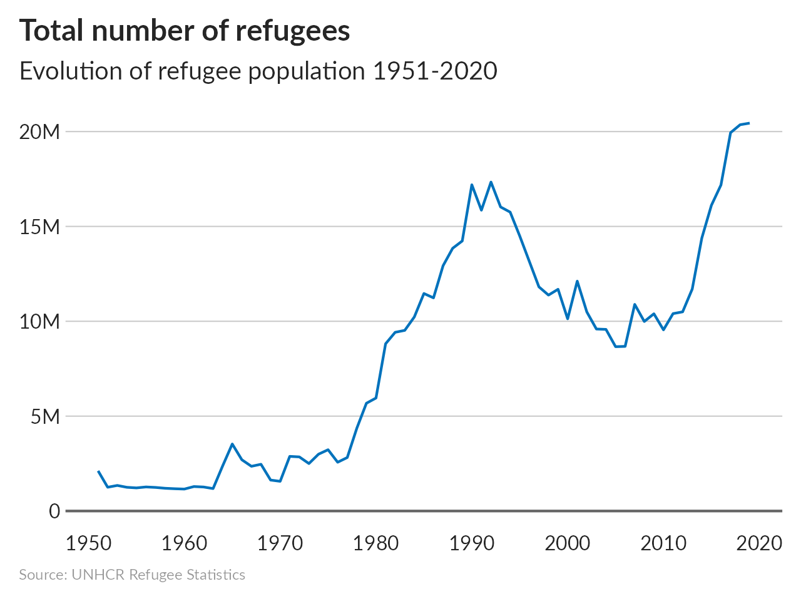
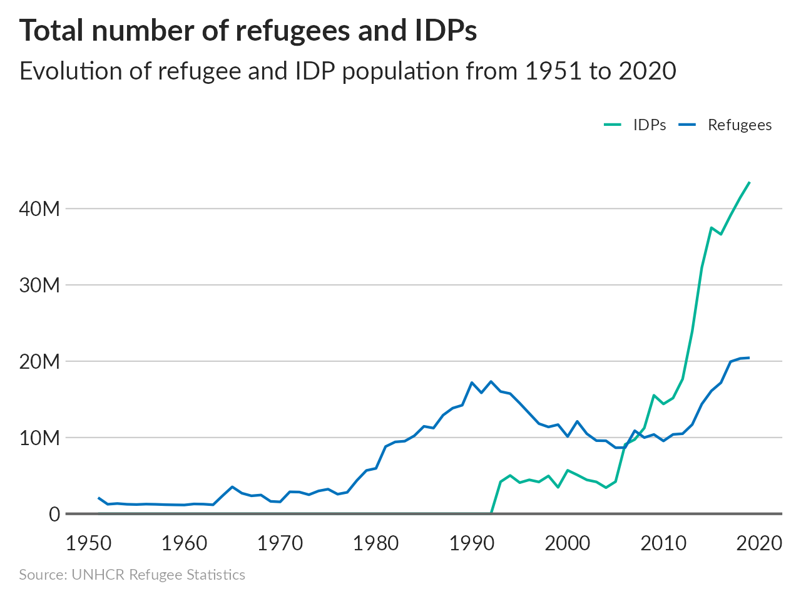
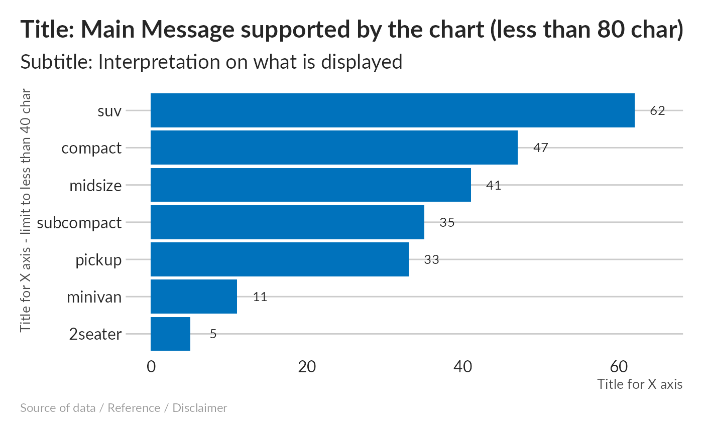
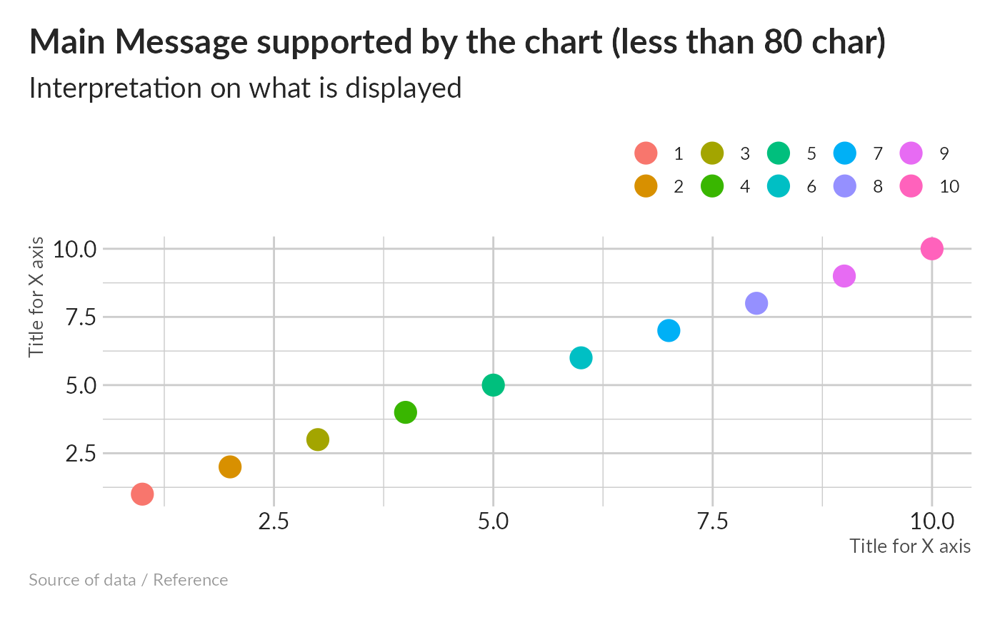
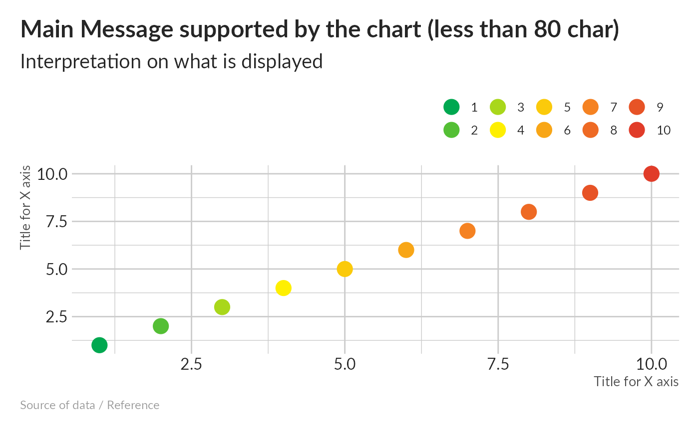

The unhcRstyle package sets the basic the visual elements that compose the UNHCR Brand. It includes some color palettes as well as a ggplot2 theme to help you create UNHCR branded charts and reports.
Getting the data
Use of the unhcrdatapackage to get End-year population figures - these are stock figures for specific types of populations at the end of each year, including refugees, IDPs and asylum seekers.
popdata <- unhcrdatapackage::end_year_population_totalsLine charts
Use of unhcr_theme and data from unhcrdatapackage to create UNHCR branded line charts.
Single line chart
Simplify the data to have only the total refugee population at the end of each year.
ref_year <- popdata %>%
dplyr::group_by(Year) %>%
dplyr::summarise(REF = sum(REF, na.rm = TRUE)) %>%
dplyr::mutate(Year = as.Date(Year, format = '%Y'))Plot the simplify data using in a single line chart using unhcr_theme.
# Create plot
single_line <- ggplot2::ggplot(ref_year, aes(x = Year, y = REF)) + #Assign Year to x and REF population value to y
geom_line(colour = unhcr_blue, size = 1) + #Define line chart color to unhcr_blue
geom_hline(yintercept = 0, size = 1, colour = unhcr_grey) + #Add major line at 0
labs(title = "Total number of refugees",
subtitle = "Evolution of refugee population 1951-2020",
caption = "Source: UNHCR Refugee Statistics") +
scale_y_continuous(label = scales::label_number_si()) + ## Format axis number
scale_x_date(breaks = breaks_pretty(n = 10)) + #Add axis label every 10 years
unhcr_theme(base_size = 16, grid = "Y") +
theme(axis.title.x = element_blank(),
axis.title.y = element_blank()) #Remove axis title in this context
# Save plot
pngfile <- knitr::fig_path(".png") # Set the file to use the Rmd chunk name as file name
agg_png(pngfile, width = 1280, height = 960, units = "px", res = 144) # Define plot size
plot(single_line)
invisible(dev.off())
knitr::include_graphics(pngfile) #Include graphic while knitting
Multiple lines
Simplify the data to have only the total refugee and idp population at the end of each year.
ref_idp_year <- popdata %>%
dplyr::group_by(Year) %>%
dplyr::summarise(REF = sum(REF, na.rm = TRUE),
IDP = sum(IDP, na.rm = TRUE)) %>%
tidyr::pivot_longer(cols = c(REF, IDP), names_to = "population_type", values_to = "number_people") %>%
dplyr::mutate(Year = as.Date(Year, format = '%Y'))Plot the simplify data using in a multiple lines chart using unhcr_theme.
# Create plot
multi_line <- ggplot2::ggplot(ref_idp_year, aes(x = Year, y = number_people, colour = population_type)) + #Assign Year to x and population value to y
geom_line(size = 1) + #Define line chart color to the population type
geom_hline(yintercept = 0, size = 1, colour = unhcr_grey) + #Add major line at 0
labs(title = "Total number of refugees and IDPs",
subtitle = "Evolution of refugee and IDP population from 1951 to 2020",
caption = "Source: UNHCR Refugee Statistics") +
ylab("Persons") +
scale_y_continuous(label = scales::label_number_si()) + ## Format axis number
scale_x_date(breaks = breaks_pretty(n = 10)) + #Add axis label every 10 years
scale_color_manual(labels = c("IDPs", "Refugees"),
values = usecol(pal = c(unhcr_green, unhcr_blue))) + #Set color from the unhcr_pal
unhcr_theme(base_size = 16, grid = "Y") +
theme(axis.title.x = element_blank(),
axis.title.y = element_blank())
# Save plot
pngfile <- knitr::fig_path(".png") # Set the file to use the Rmd chunk name as file name
agg_png(pngfile, width = 1280, height = 960, units = "px", res = 144) # Define plot size
plot(multi_line)
invisible(dev.off())
knitr::include_graphics(pngfile) #Include graphic while knitting
Use Theme on a bar plot
To understand this theme, let’s first consider a basic ggplot.
# make fake data for plots ----
bar <- count(mpg, class)
## chart
g_bars <- ggplot(bar, aes(class, n)) +
geom_col( ) +
geom_text(aes(label=n), nudge_y = 3) +
labs(title="Title: Main Message supported by the chart (less than 80 char)",
subtitle="Subtitle: Interpretation on what is displayed",
x="Title for X axis - limit to less than 40 char",
y="Title for X axis",
caption="Source of data / Reference / Disclaimer")
g_bars
We can now: * reorder x based on frequency to make the chart more legible * flip the chart again to make the chart more legiblel * include the standard unhcr_blue * apply the UNHCR them with unhcr_theme()
g_bars <- ggplot(bar, aes(x= reorder(class, n), y = n)) +
geom_col( fill = unhcr_blue) +
geom_text(aes(label=n), nudge_y = 3) +
coord_flip() +
labs(title="Title: Main Message supported by the chart (less than 80 char)",
subtitle="Subtitle: Interpretation on what is displayed",
x="Title for X axis - limit to less than 40 char",
y="Title for X axis",
caption="Source of data / Reference / Disclaimer") +
unhcr_theme(grid="Y")
g_bars
The main title are directly aligned, the correct font is used.
Use Theme on a scatter plot
To understand this theme, let’s first consider a basic ggplot.
# make fake data for plots ----
points <- data.frame(x = 1:10, y = 1:10)
## chart
g_points <- ggplot(points, aes(x, y, col = factor(x))) +
geom_point(size = 5) +
labs(x="Title for X axis",
y="Title for X axis",
title="Main Message supported by the chart (less than 80 char)",
subtitle="Interpretation on what is displayed",
caption="Source of data / Reference")
g_points
We can now apply the UNHCR them with unhcr_theme()
g_points <- g_points +
unhcr_theme()
g_points
The main title are directly aligned, the correct font is used.
next step is to apply one UNHCR color palette.
g_points <- g_points +
scale_color_discrete_unhcr(palette = "test", extend = TRUE)
#scale_color_discrete_unhcr(palette = "unhcr", extend = TRUE)
g_points